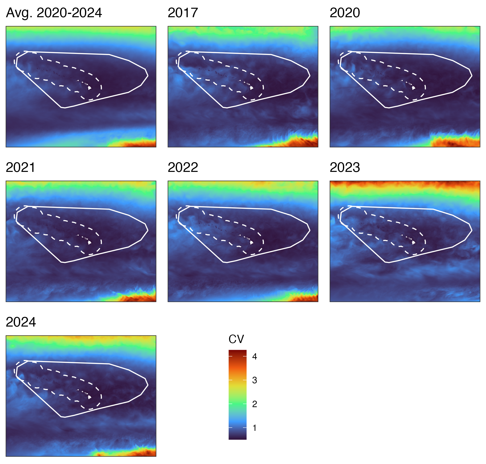
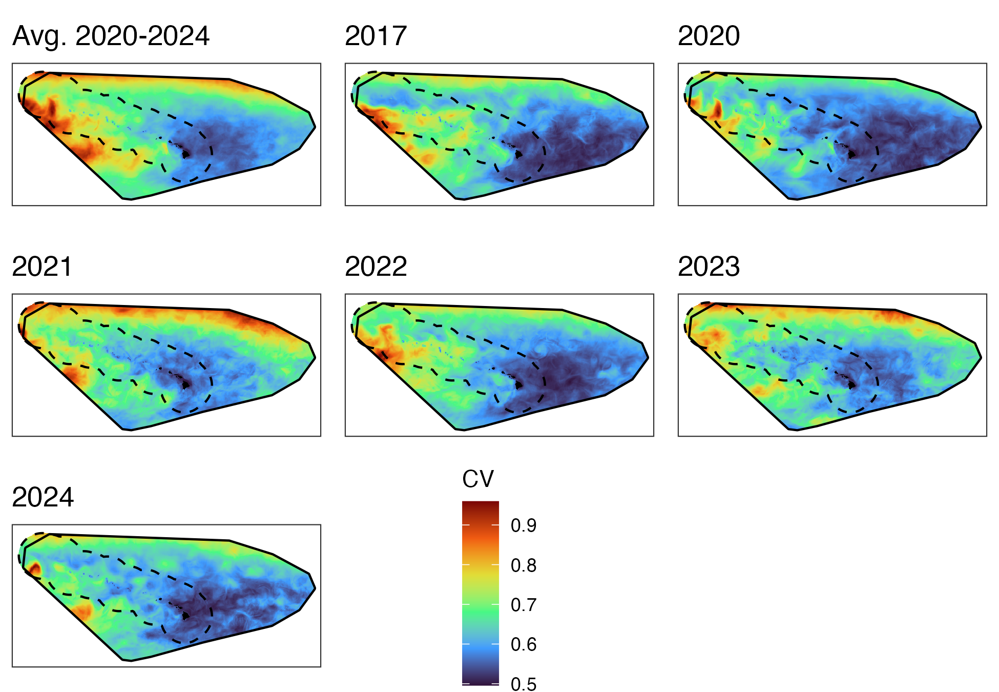

library(mgcv)
library(dsm)
library(numDeriv)
library(here)
library(tidyverse)
library(Distance)
local_wd <- here("_R_code","task_8_propagating_variance")
# Support scripts
supp_files <- list.files(path = file.path(local_wd,"support_scripts"), pattern = "\\.R$", full.names = TRUE)
for(i in seq_along(supp_files)) source(supp_files[i])
# Previous results
varprop_list <- readRDS(here( "_R_code","task_2_est_g0_ESW","output","varprop_list.rds"))
load(here("_R_code","task_4_fit_dsm_models","output","dsm_fit_final.RData"))Assessing Abundance Prediction Uncertainty
A. Fitting Extended GAM Model for Encounter Rate
Load R packages, necessary files, and supporting R scripts
Fit extended model with Jacobian based random effects
er_fit_vp <- add_varprop(er_fit,
beaufort_data = select(fkw_dsm_data, beaufort),
varprop_list, trace=TRUE)Draw empirical Bayes posterior sample using importance sampling
set.seed(8675309)
beta_er_samp <- gam.imp(er_fit_vp, 10000)
beta_er_samp$wts <- beta_er_samp$wts/sum(beta_er_samp$wts)
# 1/sum(beta_er_samp$wts^2) # Check effective sample size
idx <- sample(1:nrow(beta_er_samp$bs), 199, TRUE, prob = beta_er_samp$wts)
bs_er <- rbind(er_fit_vp$coefficients, beta_er_samp$bs[idx,])
beta_gs_samp <- gam.imp(gs_fit, 10000)
beta_gs_samp$wts <- beta_gs_samp$wts/sum(beta_gs_samp$wts)
# 1/sum(beta_gs_samp$wts^2) # Check effective sample size
idx <- sample(1:nrow(beta_gs_samp$bs), 199, TRUE, prob = beta_gs_samp$wts)
bs_gs <- rbind(gs_fit$coefficients, beta_gs_samp$bs[idx,])
save(er_fit_vp, bs_er, bs_gs, file=file.path(local_wd, "output","varprop_fit_sample.RData"))B. Predict Abundance For All Parameter Samples and Dates
Load necessary results and R packages
library(mgcv)
library(here)
library(tidyverse)
library(sf)
library(terra)
library(lubridate)
library(picMaps)
library(mapview)
library(foreach)
library(doFuture)
local_wd <- here("_R_code","task_8_propagating_variance")
#' Load model output
varprop_list <- readRDS(here( "_R_code","task_2_est_g0_ESW","output","varprop_list.rds"))
load(here( "_R_code","task_4_fit_dsm_models","output","dsm_fit_final.RData"))
load(file.path(local_wd, "output","varprop_fit_sample.RData"))
load(here( "_R_code","task_7_predicting_abundance","output","clamp_df.RData"))
#' Locate environmental data for prediction
env_dir <- here("_R_code","task_5_download_prediction_data","output")
tif_files <- list.files(path = env_dir, pattern = "\\.tif$", full.names = TRUE)Create raster and abundance storage objects
reps <- nrow(bs_gs)
env_tmp <- rast(tif_files[1])[[1]]
area <- rast(ext(env_tmp), resolution=res(env_tmp)); crs(area) <- crs(env_tmp)
area <- cellSize(area, unit="km")
hi_r <- picMaps::hawaii_coast() %>% rasterize(area, touches=TRUE, cover=TRUE, background=0)
hi_r <- 1-hi_r
hi_r <- ifel(hi_r==min(values(hi_r)), 0, hi_r)
cenpac_r <- picMaps::cenpac() %>% rasterize(area, touches=TRUE, cover=TRUE) * hi_r
names(cenpac_r) <- "cenpac_wt"
eez_r <- picMaps::hawaii_eez() %>% rasterize(area, touches=TRUE, cover=TRUE) * hi_r
names(eez_r) <- "hi_eez_wt"
fkw_mgmt_r <- picMaps::pfkw_mgmt() %>% rasterize(area, touches=TRUE, cover=TRUE) * hi_r
names(fkw_mgmt_r) <- "fkw_assess_wt"
pred_mult_r <- c(area, cenpac_r, eez_r, fkw_mgmt_r)
pred_mult_df <- as.data.frame(pred_mult_r, xy=TRUE, cells=TRUE)
L_gs_data <- predict(gs_fit, type="lpmatrix")
obs_gs <- weighted.mean(fkw_gs$ANI_033,w=fkw_gs$ProbPel)
#' -----------------------------------------------------------------------------
#' Model covariate names
#' -----------------------------------------------------------------------------
er_vars <- all.vars(as.list(er_fit$call)$formula[[3]])
er_vars <- er_vars[er_vars!="spline2use"]
gs_vars <- all.vars(as.list(gs_fit$call)$formula[[3]])
gs_vars <- gs_vars[gs_vars!="spline2use"]
var_nms <- c(er_vars, gs_vars)
clamp_df <- filter(clamp_df, var%in%var_nms, var!="Latitude")Loop over years and parameters to make predictions
plan("multisession",workers=length(tif_files))
N_storage <- foreach(i = 1:length(tif_files), .options.future=list(seed = TRUE)) %dofuture% { #i=year
env_yr <- rast(tif_files[i])
env_yr <- env_yr[[names(env_yr)%in%var_nms]]
dates <- time(env_yr) %>% unique()
year_i <- year(dates)[1]
pred_est_r <- rast(ext(env_yr), resolution=res(env_yr), nlyr=length(dates)); crs(pred_est_r) <- crs(env_yr)
pred_var_r <- pred_est_r
N_stor <- expand.grid(par_rep=1:reps, date=dates) %>% mutate(
N_cenpac = as.numeric(NA),
N_eez = as.numeric(NA),
N_assess = as.numeric(NA)
) %>% group_nest(date)
for(j in 1:length(dates)){ # j=day
env <- env_yr[[time(env_yr)==dates[j]]]
env_df <- as.data.frame(env, xy=TRUE, cells=TRUE, na.rm=FALSE)
pred_r <- rast(ext(env_yr), resolution=res(env_yr), nlyr=reps); crs(pred_r) <- crs(env_yr)
for(l in 1:nrow(clamp_df)){
env_df[clamp_df$var[l]] <- ifelse( env_df[[clamp_df$var[l]]]>clamp_df[l,"high"], clamp_df[l,"high"], env_df[[clamp_df$var[l]]])
env_df[clamp_df$var[l]] <- ifelse( env_df[[clamp_df$var[l]]]<clamp_df[l,"low"], clamp_df[l,"low"], env_df[[clamp_df$var[l]]])
}
env_df$Latitude <- env_df$y
env_df[["Jmat"]] <- matrix(0, nrow(env_df), 5)
L_er_vp <- predict(er_fit_vp, newdata=env_df, type="lpmatrix")
L_gs <- predict(gs_fit, newdata=env_df, type="lpmatrix")
for(k in 1:reps){ # k=par_rep
pred_gs_bias <- exp(L_gs_data%*%bs_gs[k,])
gs_bias_corr <- obs_gs/mean(pred_gs_bias)
pred_k <- as.vector(exp(L_er_vp %*% bs_er[k,]) * exp(L_gs %*% bs_gs[k,])) * gs_bias_corr
pred_k <- pred_k * pred_mult_df$area
pred_r[[k]][env_df$cell] <- pred_k
N_stor$data[[j]]$N_cenpac[k] <- sum(pred_k* pred_mult_df$cenpac_wt, na.rm=T)
N_stor$data[[j]]$N_eez[k] <- sum(pred_k* pred_mult_df$hi_eez_wt, na.rm=T)
N_stor$data[[j]]$N_assess[k] <- sum(pred_k* pred_mult_df$fkw_assess_wt, na.rm=T)
} # end k
pred_est_r[[j]] <- app(pred_r, mean)
pred_var_r[[j]] <- app(pred_r, var)
} # end j
time(pred_est_r) <- dates
est_outfile <- paste0("pred_est_",year_i,".tif")
var_outfile <- paste0("pred_var_",year_i,".tif")
writeRaster(pred_est_r, file.path(local_wd,"output","predictions", est_outfile), overwrite=TRUE)
writeRaster(pred_var_r, file.path(local_wd,"output","predictions", var_outfile), overwrite=TRUE)
tibble(year=year_i, data=list(N_stor), est_file=est_outfile, var_file=var_outfile)
} # end i
plan("sequential")
N_storage <- do.call(bind_rows, N_storage)
N_storage <- N_storage %>% unnest(cols=data) %>% unnest(cols=data)
write_csv(N_storage, file=file.path(local_wd,"output","N_varprop.csv"))Calculate CVs and interval estimates
N_cv <- N_storage %>% group_by(year) %>%
summarise(
N_cenpac_m=mean(N_cenpac), N_cenpac_sd=sd(N_cenpac),
N_eez_m=mean(N_eez), N_eez_sd=sd(N_eez),
N_assess_m=mean(N_assess), N_assess_sd=sd(N_assess),
) %>% mutate(
N_cenpac_cv = N_cenpac_sd/N_cenpac_m,
N_eez_cv = N_eez_sd/N_eez_m,
N_assess_cv = N_assess_sd/N_assess_m
) %>% mutate(year = as.character(year))
N_cv_avg <- filter(N_storage, year!=2017) %>%
summarise(
N_cenpac_m=mean(N_cenpac), N_cenpac_sd=sd(N_cenpac),
N_eez_m=mean(N_eez), N_eez_sd=sd(N_eez),
N_assess_m=mean(N_assess), N_assess_sd=sd(N_assess),
) %>% mutate(
N_cenpac_cv = N_cenpac_sd/N_cenpac_m,
N_eez_cv = N_eez_sd/N_eez_m,
N_assess_cv = N_assess_sd/N_assess_m
) %>% mutate(year="avg 2020-2024") %>%
relocate(year, .before=1)
N_cv <- bind_rows(N_cv_avg, N_cv)
N_cv <- N_cv %>% select(year, N_cenpac_cv, N_eez_cv, N_assess_cv) %>%
mutate(
sigma_cenpac = sqrt(log(1+N_cenpac_cv^2)),
sigma_eez = sqrt(log(1+N_eez_cv^2)),
sigma_assess = sqrt(log(1+N_assess_cv^2))
)
N_summ <- read_csv(here("_R_code","task_7_predicting_abundance","output","N_summ.csv"))
N_cv <- N_cv %>% full_join(N_summ)
N_cv <- N_cv %>% mutate(
mu_cenpac = log(N_cenpac_est)-sigma_cenpac^2/2,
mu_eez = log(N_eez_est)-sigma_eez^2/2,
mu_assess = log(N_fkw_mgmt_est)-sigma_assess^2/2,
CI_low_cenpac = exp(mu_cenpac - 1.96*sigma_cenpac),
CI_hi_cenpac = exp(mu_cenpac + 1.96*sigma_cenpac),
CI_low_eez = exp(mu_eez - 1.96*sigma_eez),
CI_hi_eez = exp(mu_eez + 1.96*sigma_eez),
CI_low_assess = exp(mu_assess - 1.96*sigma_assess),
CI_hi_assess = exp(mu_assess + 1.96*sigma_assess)
)
N_cv <- N_cv %>% select(year,
N_cenpac_est, CI_low_cenpac, CI_hi_cenpac, N_cenpac_cv,
N_eez_est, CI_low_eez, CI_hi_eez, N_eez_cv,
N_fkw_mgmt_est, CI_low_assess, CI_hi_assess, N_assess_cv)
write_csv(N_cv, file=file.path(local_wd,"output","N_cv_varprop.csv"))Abundance uncertainty results
Central Pacific study area results
# A tibble: 7 × 5
year N_cenpac_est CI_low_cenpac CI_hi_cenpac N_cenpac_cv
<chr> <dbl> <dbl> <dbl> <dbl>
1 avg 2020-2024 33216 9917 82950 0.58
2 2017 32471 11111 74879 0.52
3 2020 30956 10494 71788 0.52
4 2021 29081 10294 65697 0.5
5 2022 24811 9006 55192 0.49
6 2023 45598 15424 105881 0.52
7 2024 35634 12044 82784 0.52Hawaiʻi pelagic false killer whale assessment area results
# A tibble: 7 × 5
year N_fkw_mgmt_est CI_low_assess CI_hi_assess N_assess_cv
<chr> <dbl> <dbl> <dbl> <dbl>
1 avg 2020-2024 4526 1547 10444 0.52
2 2017 4647 1453 11300 0.56
3 2020 4933 1676 11423 0.52
4 2021 4124 1486 9216 0.49
5 2022 4467 1485 10482 0.53
6 2023 4262 1483 9731 0.51
7 2024 4843 1715 10939 0.5 Hawaiian EEZ results
# A tibble: 7 × 5
year N_eez_est CI_low_eez CI_hi_eez N_eez_cv
<chr> <dbl> <dbl> <dbl> <dbl>
1 avg 2020-2024 1745 526 4334 0.58
2 2017 1828 489 4852 0.64
3 2020 1950 580 4882 0.59
4 2021 1545 510 3642 0.54
5 2022 1744 483 4541 0.62
6 2023 1639 523 3940 0.55
7 2024 1848 602 4390 0.54C. Plotting Spatial Uncertainty
Load R packages and previous results
library(here)
library(tidyverse)
library(sf)
library(terra)
library(lubridate)
library(picMaps)
library(mapview)
library(tidyterra)
library(ggspatial)
library(ggpubr)
library(nmfspalette)
local_wd <- here("_R_code","task_8_propagating_variance")
#' -----------------------------------------------------------------------------
#' Load varprop prediction output file names
#' -----------------------------------------------------------------------------
pred_files <- list.files(file.path(local_wd, "output","predictions"))
est_files <- pred_files[grep("est", pred_files)]
var_files <- pred_files[grep("var", pred_files)]Calculate CVs for each raster cell
years <- NULL
cv_raster <- NULL
mean_raster <- NULL
var_raster <- NULL
for(i in 1:length(est_files)){
est_r <- rast(file.path(local_wd, "output","predictions",est_files[i]))
years[i] <- time(est_r)[1] %>% year()
var_r <- rast(file.path(local_wd, "output","predictions",var_files[i]))
var_raster[[i]] <- app(var_r, mean) + app(est_r,var)
mean_raster[[i]] <- app(est_r,mean)
cv_raster[[i]] <- app(var_raster[[i]], sqrt) / mean_raster[[i]]
}
cv_raster <- do.call(c, cv_raster)
names(cv_raster) <- years
mean_raster <- do.call(c, mean_raster)
names(mean_raster) <- years
var_raster <- do.call(c, var_raster)
names(var_raster) <- years
var_20_24 <- app(var_raster[[-1]], mean) + app(mean_raster[[-1]], var)
mean_20_24 <- app(mean_raster[[-1]], mean)
cv_20_24 <- app(var_20_24, sqrt)/mean_20_24
cv_raster <- c(cv_20_24, cv_raster)
names(cv_raster)[1] <- "Avg 2020-2024"
writeRaster(cv_raster, file.path(local_wd, "output","yearly_cv.tif"), overwrite=T)Create yearly spatial CV plots
hi <- picMaps::hawaii_coast()
eez <- picMaps::hawaii_eez()
fkwm <- picMaps::pfkw_mgmt()
ppp <- vector("list",nlyr(cv_raster))
ppp[[1]] <- ggplot() + geom_spatraster(data=cv_raster[[1]]) +
layer_spatial(hi, fill="white", color=NA) +
layer_spatial(eez, color="white", fill=NA, linetype="dashed",lwd=0.5) +
layer_spatial(fkwm, color="white", fill=NA,lwd=0.5) +
scale_fill_viridis_c(option = "H", na.value = NA, name="CV") +
scale_x_continuous(breaks=c(175, 228)) + scale_y_continuous(breaks=c(0, 40)) +
theme_bw() + #theme(legend.position="none") +
theme(axis.text = element_blank(), axis.ticks = element_blank()) +
coord_sf(expand = FALSE) +
ggtitle("Avg. 2020-2024")
lll <- get_legend(ppp[[1]])
ppp[[1]] <- ppp[[1]] + theme(legend.position="none")
for(i in 2:nlyr(cv_raster)){
ppp[[i]] <- ggplot() + geom_spatraster(data=cv_raster[[i]]) +
layer_spatial(hi, fill="white", color=NA) +
layer_spatial(eez, color="white", fill=NA, linetype="dashed",lwd=0.5) +
layer_spatial(fkwm, color="white", fill=NA,lwd=0.5) +
scale_fill_viridis_c(option = "H", na.value = NA, name="CV") +
scale_x_continuous(breaks=c(175, 228)) + scale_y_continuous(breaks=c(0, 40)) +
theme_bw() + theme(legend.position="none") +
theme(axis.ticks = element_blank()) +
theme(axis.text = element_blank(), axis.ticks = element_blank()) +
coord_sf(expand = FALSE) +
ggtitle(names(cv_raster)[i])
}
pout <- ggarrange(ppp[[1]], ppp[[2]], ppp[[3]], ppp[[4]], ppp[[5]], ppp[[6]], ppp[[7]],lll)
ggsave(pout, file=file.path(local_wd, "output","cenpac_cv_fig.png"), width=6.5, height=6.2)
## EEZ and Assessment areas
ppp <- vector("list",nlyr(cv_raster))
eez_asses <- st_union(eez, fkwm) %>% st_shift_longitude()
bound <- eez_asses %>% st_buffer(100000) %>% st_shift_longitude()
cv_clip <- crop(cv_raster, vect(bound)) %>% mask(eez_asses)
ppp[[1]] <- ggplot() + geom_spatraster(data=cv_clip[[1]]) +
layer_spatial(hi, fill="black", color=NA) +
layer_spatial(eez, color="black", fill=NA, linetype="dashed",lwd=0.5) +
layer_spatial(fkwm, color="black", fill=NA,lwd=0.5) +
scale_fill_viridis_c(option = "H", na.value = NA, name="CV") +
theme_bw() +
theme(axis.text = element_blank(), axis.ticks = element_blank(), panel.grid.major = element_blank()) +
coord_sf(expand = FALSE) +
ggtitle("Avg. 2020-2024")
lll <- get_legend(ppp[[1]])
ppp[[1]] <- ppp[[1]] + theme(legend.position="none")
for(i in 2:nlyr(cv_raster)){
ppp[[i]] <- ggplot() + geom_spatraster(data=cv_clip[[i]]) +
layer_spatial(hi, fill="black", color=NA) +
layer_spatial(eez, color="black", fill=NA, linetype="dashed",lwd=0.5) +
layer_spatial(fkwm, color="black", fill=NA, lwd=0.5) +
scale_fill_viridis_c(option = "H", na.value = NA, name="CV") +
theme_bw() + theme(legend.position="none") +
theme(axis.text = element_blank(), axis.ticks = element_blank(), panel.grid.major = element_blank()) +
coord_sf(expand = FALSE) +
ggtitle(names(cv_raster)[i])
}
pout <- ggarrange(ppp[[1]], ppp[[2]], ppp[[3]], ppp[[4]], ppp[[5]], ppp[[6]], ppp[[7]],lll)
ggsave(pout, file=file.path(local_wd, "output","eez_assess_cv_fig.png"), width=6.5, height=4.5)Spatial CV figures
Central Pacfic study area

Hawaiʻi pelagic false killer whale assessment area and Hawaiian EEZ
